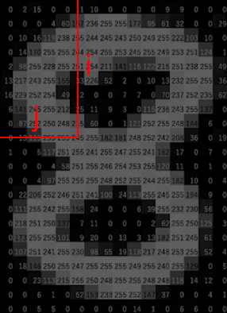

Homework 6
Image Processing
Description
In this homework, you will implement a small image processing application with various functionality. You will need to implement 6 functions that will be explained in more detail later in this document.
Your Task
Outline of the task (each one of these 5 tasks will amount to 20 points, to a total of 100):
-
You will need to implement two functions
read_imagefile(f)andwrite_imagefile(f, img_matrix)that will allow you to read and write.pgmimage file format (more on that later).-
If you want to see your results, you can view
.pgmimage files using the free software GIMP or following website online: PGMViewer.
-
If you want to see your results, you can view
-
You will need to implement
misalign(img_matrix)function. This function should reverse odd numbered columns in the given image. -
You will need to implement
sort_columns(img_matrix)function. This function should sort every column of the given image in ascending order from top the bottom. -
You will need to implement
sort_rows_border(img_matrix)function. This function should sort every row in ascending order from left to right. However, sorting should be done independently respecting the borders (see the detailed explanation below). -
You will need to implement
convolution(img_matrix, kernel)function. This function should apply the convolution operation to theimg_matrixusing the 3x3kernel(see the detailed explanation below).
Input
User will provide three words separated by single whitespaces in the form <INPUT_FILE>
<COMMAND> <OUTPUT_FILE>
Input taking part is already handled:
-
Variable
inp_filename: non-empty word<INPUT_FILE>. Name of the input image file. Always will be a.pgmfile. -
Variable
operation: non-empty word<COMMAND>. Name of the command. Possible values:misalign,sort_columns,sort_rows_border,highpass -
Variable
out_filename: non-empty word<OUTPUT_FILE>. Name of the output image file. Always will be a.pgmfile.
Provided Code
When you look at the provided code, you will see that we are already taking the input from the user and also at the bottom of the page we are already calling the related functions on given commands. It would be beneficial to investigate these parts as it will give a clue on how the program supposed to work..pgm Image File Format
We will be dealing with grayscale images (no colors). Following is an example .pgm file
content.
First line is composed of 4 parts as: <CODE> <WIDTH> <HEIGHT> <MAX_LEVEL>
-
<CODE>will always beP2 -
<WIDTH>is the width of the image in pixels (positive integer). -
<HEIGHT>is the height of the image in pixels (positive integer). -
<MAX_LEVEL>is the value that corresponds to pure white color. In our examples, this will always be 255. This means that 0 means pure black and 255 means pure white whereas all the numbers in between are shades of gray linearly.
Function Definitions
read_imagefile(f)
This function should assume f is an already opened .pgm image file
following the format described above
(check the first three lines under the # DO_NOT_EDIT_ANYTHING_BELOW_THIS_LINE).
It should read this file and convert it into a 2-D list of lists (of integers). Return value, let's
say img_matrix should be this list.
Given i and j, value of the img_matrix[i][j] should
correspond to
the color value of the pixel at the i'th row and j'th column of the
image. This means that:
-
If
iis 0, we are referring to the first horizontal line of pixels (top part) of the image whereas ifiis<HEIGHT> - 1. We are referring to the last horizontal line of pixels (bottom part) in the image. -
If
jis 0, we are referring to the first vertical line of pixels (left part) of the image whereas ifjis<WIDTH> - 1. We are referring to the last vertical line of pixels (right part) in the image.
img_matrix: 
write_imagefile(f, img_matrix)
This function should assume f is an already opened .pgm file (opened in "w" mode)
(check the last 3 lines of provided code).
It should write to this file in such a way that it becomes a proper .pgm image file
that contains the image described by img_matrix.
It should follow the format of .pgm above.
misalign(img_matrix)
This function should modify the img_matrix in such a way that the "odd numbered"
columns of the image are reversed from top to bottom.
It should return this resulting img_matrix after modification. Example:
| Input | animals.pgm | animals_misalign.pgm |
| animals.pgm misalign animals_misalign.pgm |
sort_columns(img_matrix)
This function should modify the img_matrix in such a way that the columns of the image
are sorted from top to bottom, in ascending order.
It should return this resulting img_matrix after modification. Example:
| Input | animals.pgm | animals_sort_columns.pgm |
| animals.pgm sort_columns animals_sort_columns.pgm |
sort_rows_border(img_matrix)
This function should modify the img_matrix in such a way that the rows of the image
are sorted from left to right, in ascending order. However with one caveat, it should respect the
borders.
A border is a pure black (color value 0) separator between parts of the image.
In the cases this function will be called, you can assume the only parts of the image that have the
value
0 will be the borders. Borders does not have to be 1 pixel thick. They can be wider than that.
If there are no borders in the image, this is almost the same task as previous one, with rows
instead of columns.
It should return this resulting img_matrix after modification. Example:
| Input | animals.pgm | animals_sort_rows_border.pgm |
| animals.pgm sort_rows_border animals_sort_rows_border.pgm |
convolution(img_matrix, kernel)
This function should return the result of the convolution with zero padding
between img_matrix and a 3 by 3 kernel kernel.
It will be called when the highpass command is entered by the user.
It will be called using a specific kernel (check the provided code relating to the
highpass command.)
What is convolution?
 (GIF by Dharmaraj D)
(GIF by Dharmaraj D) Imagine the light blue part is the
img_matrix and it is extended by zeroes.
Operationally, imagine that
you are moving the kernel on this new extended matrix. As the kernel is moving ( region in dark
blue )
you element-wise multiply the kernel and the values in dark blue region then sum all these values
up.
Result of this summation is the new value in your resulting matrix. For example, focus on the first
frame:
This frame shows the calculation of the value in
[0][0] position of the resulting matrix.
When we element-wise multiply the kernel and the dark blue region and sum the values we get the
expression
(0 * 0) + (0 * -1) + (0 * 0) + (0 * -1) + (60 * 5) + (113 * -1) + (0 * 0) + (73 * -1) + (121 *
0).
Which is equal to 114. This means the value at [0][0] position of the
resulting matrix should be 114.
Some notes:
- At each position, if the resulting value is bigger than 255, you should set it to 255.
- At each position, if the resulting value is less than 0, you should set it to 0.
- If you make changes on
img_matrixwhile you are still applying the convolution operation, results will be altered. Therefore, you should create a new matrix and fill it with the values you are calculating while not touching theimg_matrixitself.
It should return this resulting matrix after modification. Example:
| Input | animals.pgm | animals_highpass.pgm |
| animals.pgm highpass animals_highpass.pgm |
Notes:
You will not be provided aTester.py as with other homeworks.
However, you are provided two example images and resulting images after each separate command.
These will be in the same folder as Main.py.
To check your results, you can open these image files in text editor and see the values.
Also you should check them by eye, using an image viewer tool that was suggested in the Your Task section.
------------------------------------------------------------------
Check the examples for further clarification. Keep in mind that we will be grading your code not just based on these examples, but other cases as well, so try to write code which can handle all possible cases.
Warning: You are not allowed to use any imports.